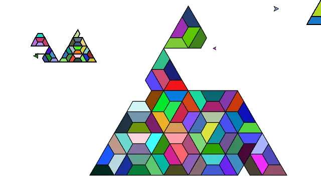

Projet «Triforce»
Pavage
Terminé
Langue :

Début du projet :
19/11/2021
Fin du projet :
07/12/2021
Langage
R Python
Equipe
Matthieu FARANDJIS
Plus sur le projet
Présentation
Après notre projet Turtle "Bateau" en NSI en première, voici le projet pavage.
Le principe ?
Construire un triangle à partir de trapèze.
Au fur et à mesure du projet, le triangle s'est perfectionné. Passant de la couleur unique à
un triangle composé de trapèzes de différentes couleurs.
Vu que ce triangle est composé de trapèze, il a un trou. La partie avancée du projet
consistait à mettre à d'autres endroits ce trou.
Derrière l'apparence simple du projet, c'est un vrai casse-tête avec la récursivité !
J'ai réussi à faire le projet, et même sa version avancée.
La récursivité est quelque chose que je redoute beaucoup. À la moindre erreur, tout plante.
C'est à la fois passionnant et déprimant parfois...
Mais c'est ce qui fait son charme.
Le projet "Bateau" de l'année de première est disponible avec le projet "Pavage" sur GitHub.
Lancer le projet
Pour pouvoir lancer le programme, vérifiez que vous possédez bien les modules suivants :
Turtle
Random
Pour lancer le projet, importer puis exécuter le fichier projet_tri_force_avancer.py.
Le projet a été créé avec l'IDE Spyder (Ananconda).
Si vous n'avez pas de programme pour lancer le projet Python, vous pouvez installer l'IDE EduPython.
Je recommande EduPython si vous souhaitez tester le projet sans vous embêter avec l'installation des modules ou de Python.
Sur EduPython:
Importer : Fichier > Ouvrir > projet_tri_force_avancer.py
Lancer le jeu : Exécuter > Exécuter (Ctrl + F9)
Arrêter le jeu : Exécuter > Stopper le debuggage (Ctrl + Alt + F9)
Note : les modules cités sont présents par défaut dans EduPython.
Note 2 : le projet "Bateau" de l'année de première est disponible avec le projet "Pavage".